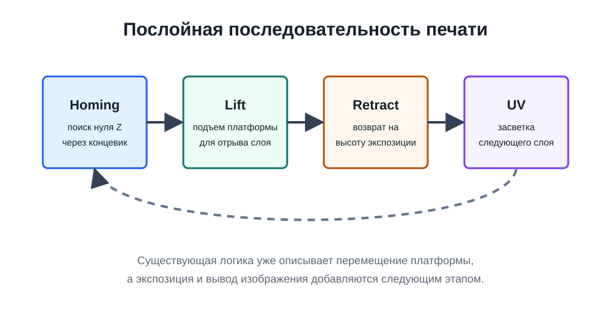

Журнал фиксирует основные этапы движения проекта: от постановки аппаратной задачи и первичной документации до формирования программной логики управления Z-осью и планирования следующих модулей.
Проанализированы требования к фотополимерному принтеру
На начальном этапе была сформирована предметная область проекта: рассмотрены особенности малогабаритной фотополимерной печати, роль вертикального позиционирования платформы, требования к UV-засветке и необходимость стабильной повторяемости технологических операций.
Эта работа задала методическую основу дальнейшей разработки. Проект был рассмотрен не как набор отдельных деталей, а как киберфизическая система, в которой программные команды, электрические сигналы, механическое перемещение и поведение фотополимера должны быть согласованы между собой.
анализ требованийSLA/MSLAпостановка задачи
Сформирована аппаратная рамка проекта
После анализа требований была выполнена укрупненная спецификация аппаратной части малого фотополимерного принтера. В качестве управляющего ядра выбран ESP32-S3, для вертикального перемещения платформы рассматривается шаговый двигатель NEMA17 с драйвером A4988, а для экспозиционного контура выделена UV-матрица с коммутацией через реле.
Особое внимание было уделено системной совместимости компонентов: уровню логических сигналов, питанию 12 В, необходимости общего GND, роли понижающего преобразователя и потенциальным рискам при подключении силовой нагрузки.
аппаратная архитектураESP32-S3питание
Реализовано базовое управление осью Z
В программной части проекта оформлен модуль, отвечающий за управление шаговым двигателем через драйвер A4988. Реализация включает настройку GPIO, сигналы STEP, DIR и EN, генерацию импульсов, проверку концевого выключателя и вычисление текущего положения в шагах и миллиметрах.
Эта задача является центральной для текущей стадии, поскольку ось Z задает геометрическую дисциплину печати: подъем платформы, возврат к расчетной позиции, отсутствие накопленной ошибки и возможность дальнейшего построения полной последовательности печатных операций.
ось ZA4988NEMA17homing

Обобщенная схема того, как движение оси Z связано с будущей экспозицией слоя.
Следующие шаги
Что логично делать дальше
После базовой проверки оси Z проект должен перейти к интеграции UV-управления, ограничений безопасности и минимального сценария печати. Только после этого имеет смысл усложнять интерфейс и добавлять обработку файлов слоев.